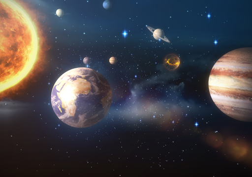
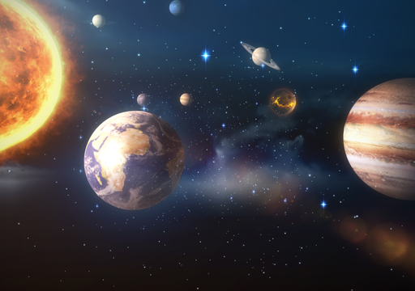
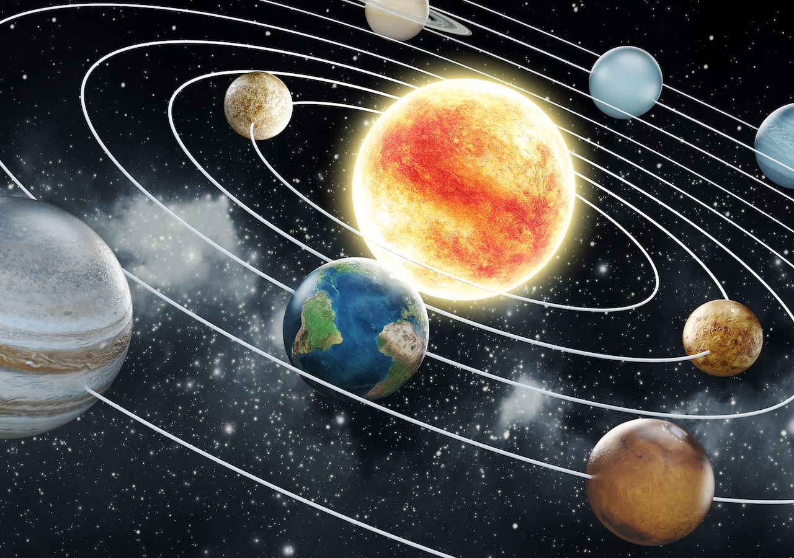

O Sistema Solar compreende o conjunto constituído pelo Sol e todos os corpos celestes que estão sob seu domínio gravitacional.
A estrela central, maior componente do sistema, respondendo por mais de 99,85% da massa total gera sua energia através da fusão de hidrogênio em hélio,
dois de seus principais constituintes. Os quatro planetas mais perto do sol (Mercúrio, Vênus, Terra e Marte.)possuem em comum uma crosta sólida e rochosa,
razão pela qual se classificam no grupo dos planetas telúricos ou rochosos. Mais afastados, os quatro gigantes gasosos, Júpiter, Saturno, Urano e Netuno,
são os componentes de maior massa do sistema logo após o próprio Sol. Dos cinco planetas anões, Ceres é o que se localiza mais próximo do centro do Sistema Solar,enquanto todos os outros, Plutão, Haumea, Makemake e Éris, encontram-se além da órbita de Netuno.
Permeando praticamente toda a extensão do Sistema Solar, existem incontáveis objetos que constituem a classe dos corpos menores. Os asteroides, essencialmente rochosos, concentram-se numa faixa entre as órbitas de Marte e Júpiter que se assemelha a um cinturão
Além da órbita do último planeta, a temperatura é suficientemente baixa para permitir a existência de fragmentos de gelo, que se aglomeram sobretudo nas regiões do Cinturão de Kuiper,
disco disperso e na nuvem de Oort; esporadicamente são desviados para o interior do sistema onde, pela ação do calor do Sol, transformam-se em cometas. Muitos corpos, por sua vez,
possuem força gravitacional suficiente para manter orbitando em torno de si objetos menores, os satélites naturais, com as mais variadas formas e dimensões.
Os planetas gigantes apresentam, ainda, sistemas de anéis planetários, uma faixa composta por minúsculas partículas de gelo e poeira.
